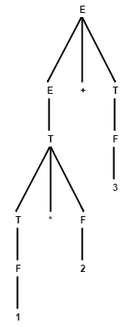

Preface
In this course, my teammate and I were tasked with building a
Compiler for a C-like language created for the course,
'Decaf'.
An exercept from the Decaf Specification page:
Decaf is a strongly typed C-like language. The feature set is trimmed down considerably from what is usually part of a full-fledged programming language. This is done to keep the programming assignments manageable. Despite these limitations, Decaf will be able to handle interesting and non-trivial programs.
Here is an example Decaf program:
extern func print_int(int) void;
package GreatestCommonDivisor {
var a int = 10;
var b int = 20;
func main() int {
var x, y, z int;
x = a;
y = b;
z = gcd(x, y);
// print_int is part of the standard input-output library
print_int(z);
}
// function that computes the greatest common divisor
func gcd(a int, b int) int {
if (b == 0) { return(a); }
else { return( gcd(b, a % b) ); }
}
}
The challenge of this course stemmed from learning the theoretical aspects of
Lexical Analysis,
Grammar Parsing, and
Code Generation, then applying them to working code to design a complex system based off a set of specifications.
The three main tools we used were:
- Flex
- YACC/Bison
- LLVM
The main part of the Lexical Analyzer is composed of
Regular Expressions, a sequence of characters that define a search pattern, used in pattern matching with strings or string matching.
Simple examples of Regular Expressions are as follows:
gr(a|e)y : The word grey or gray, spelled either way
[a-zA-Z] : Lower & Uppercase Alphabetic characters
[^a-zA-Z] : Any characters that are NOT Lower & Uppercase Alphabetic characters ([^ ] : Any characters but the ones that follow)
[a-zA-Z0-9] : Alphanumeric characters
(a|b)* : Any number of the letters a or b in any order, or the empty string "" (* : Kleene Closure matches the preceding element(s) zero or more times)
(a|b)*c : Starting with any number of the letters a or b in any order, or the empty string "", and ends with the letter c
The topic of regular expressions is a broad subject, and the above barely scratches the surface of what they're capable of.
Flex builds upon the the programming language C. The basic structure of a Flex program is demonstrated below:
%{ // Indicates to Flex that C syntax is going to be enclosed inside the {}
#include <iostream>
using namespace std;
int mylineno = 0;
%}
%option noyywrap // A Flex option to toggle a specific setting
// Defining Regular Expressions into variables for use below
alpha [A-Za-z]
dig [0-9]
%% // Indicates to Flex that the definition section of the program is ending, and the token definition section is beginning
// Regular Expression C Syntax to process the corresponding Regular Expression
[{alpha}\_][{alpha}\_{dig}]* { yylval.sval = new string(yytext); return T_ID; }
{dig}{dig}* { yylval.number = conv_intconstant(yytext); return T_INTCONSTANT; }
= { return T_ASSIGN; }
; { return T_SEMICOLON; }
%% // Indicates to Flex that the token definitions section is ending, and the main program is beginning
int yyerror(const char *s) {
cerr << lineno << ": " << s << " at char " << tokenpos << endl;
return 1;
}
The main challenge of building a Lexical Analyzer was following the
Decaf Specification and building regular expressions for the following tokens:
T_AND &&
T_ASSIGN =
T_BOOLTYPE bool
T_BREAK break
T_CHARCONSTANT char_lit (see section on Character literals)
T_COMMA ,
T_COMMENT comment
T_CONTINUE continue
T_DIV /
T_DOT .
T_ELSE else
T_EQ ==
T_EXTERN extern
T_FALSE false
T_FOR for
T_FUNC func
T_GEQ >=
T_GT >
T_ID identifier (see section on Identifiers)
T_IF if
T_INTCONSTANT int_lit (see section on Integer literals)
T_INTTYPE int
T_LCB {
T_LEFTSHIFT <<
T_LEQ <=
T_LPAREN (
T_LSB [
T_LT <
T_MINUS -
T_MOD %
T_MULT *
T_NEQ !=
T_NOT !
T_NULL null
T_OR ||
T_PACKAGE package
T_PLUS +
T_RCB }
T_RETURN return
T_RIGHTSHIFT >>
T_RPAREN )
T_RSB ]
T_SEMICOLON ;
T_STRINGCONSTANT string_lit (see section on String literals)
T_STRINGTYPE string
T_TRUE true
T_VAR var
T_VOID void
T_WHILE while
T_WHITESPACE whitespace (see section on Whitespace)
Building regular expressions for some of the above are easier than others. Below are a few samples, ranging from the easier ones to the harder ones.
- Reserved Keywords
As one would expect, the regular expression for these tokens are the same as when typed in decaf, as such:
- extern {return T_EXTERN;}
- return {return T_RETURN;}
- continue {return T_CONTINUE;}
-
Variable Identifier
As in C, variable names can be any sequence of letters, numbers and the character '_' as long as it starts with a letter. The regular expression for this is:
- [a-zA-Z\_][a-zA-Z\_0-9]* { yylval.sval = new string(yytext); return T_ID; }
Note: In the regular expression, '\' indicates an escaped character in Flex, as '_' would otherwise be read as a Flex command.yylval.sval defines a type that will be used in the Grammar Parser, and yytext is where the inputted variable name is stored. This allows the Grammar Parser to retrieve the variable name from the token T_ID when needed.
-
Escaped Characters In Character Literals
As in C, character literals are any characters enclosed in single quotes, ', and treated as an integer corresponding to their ASCII integer values. The regular expression for this is:
[']([^\\n']|[\\][nrtvfab\\\'\"])['] {
char escape_check = yytext[1];
char newvar = yytext[2];
if(escape_check == '\\'){
yylval.number = char_lit_esc_char(newvar);
}
else{
yylval.number = yytext[1];
}
return T_CHARCONSTANT;
}
In simpler terms, the regular expression above defines characters literals as:
`'` { char | escaped_char } `'`
Handling regular character literals is as easy as using the C function atoi(), which converts a single character to the corresponding ASCII integer value.
In order to handle escaped characters however, we opted to check whether or not it was an escaped character by looking for the '\' character in the first position. Given that was the case, then we used the char_lit_esc_char() function, which is defined as follows:
int char_lit_esc_char(char newvar){
if(newvar == 'r'){
return 13;
}
else if(newvar == 't'){
return 9;
}
else if(newvar == 'f'){
return 12;
}
else if(newvar == 'v'){
return 11;
}
else if(newvar == 'n'){
return 10;
}
else if(newvar == '\''){
return 39;
}
else if(newvar == 'b'){
return 8;
}
else if(newvar == 'a'){
return 7;
}
else if(newvar == '\\'){
return 92;
}
else if(newvar == '"'){
return 34;
}
else{
return atoi(yytext);
}
}
Which determines what character is being escaped, and returning the corresponding ASCII integer value of the character.
-
Escaped Characters In String Literals
String literals are any sequence of characters inside of double quotes, "".This proved to be the most challenging regular expression to handle. Given that one wanted to express symbols such as ", \, or escaped characters such as new line (\n), tab (\t), etc. in a string, the lexical analyzer needs to recognise these situations and process them accordingly. As such, the regular expression for this is:
- \"([^\\"\n]|\\[nrtvfab\\'"])*\" { yylval.sval = esc_char(yytext); return T_STRINGCONSTANT; }
In simpler terms, the regular expression above defines string literals as:
`"` { char | escaped_char } `"`
The function esc_char() is defined as:
string *esc_char(string os){
string* s = new string(os);
s->erase(0, 1);
s->pop_back();
int i = s->find("\\n");
if(i != string::npos){
const char* replace = "\n";
s->replace(s->find("\\n"), 2, replace);
}
i = s->find("\\t");
if(i != string::npos){
const char* replace = "\t";
s->replace(s->find("\\t"), 2, replace);
}
i = s->find("\\v");
if(i != string::npos){
const char* replace = "\v";
s->replace(s->find("\\v"), 2, replace);
}
i = s->find("\\r");
if(i != string::npos){
const char* replace = "\r";
s->replace(s->find("\\r"), 2, replace);
}
i = s->find("\\a");
if(i != string::npos){
const char* replace = "\a";
s->replace(s->find("\\a"), 2, replace);
}
i = s->find("\\f");
if(i != string::npos){
const char* replace = "\f";
s->replace(s->find("\\f"), 2, replace);
}
i = s->find("\\b");
if(i != string::npos){
const char* replace = "\b";
s->replace(s->find("\\b"), 2, replace);
}
i = s->rfind("\\\"");
if(i != string::npos){
const char* replace = "\"";
s->replace(s->find("\\\""), 2, replace);
}
i = s->find("\\\\");
if(i != string::npos){
const char* replace = "\\";
s->replace(s->find("\\\\"), 2, replace);
}
return s;
}
The function esc_char() was defined to ensure that the correct sequence of characters was stored in the token. For example, without processing the initial string in esc_char(), the token would store the string "\\\"" as that sequence of characters, as opposed to storing the intended string of "\"".
The following are a couple of sample decaf programs, and what the Lexical Analyzer passes to the Grammar Parser:
package C {
func f() void {
x = 1;
}
}
The lexical analyzer would return:
T_PACKAGE package
T_ID C
T_LCB {
T_FUNC func
T_ID f
T_LPAREN (
T_RPAREN )
T_VOID void
T_LCB {
T_ID x
T_ASSIGN =
T_INTCONSTANT 1
T_SEMICOLON ;
T_RCB }
T_RCB }
extern func print_string(string) void;
package Test {
func main() int {
print_string("hello, world\n");
}
}
The lexical analyzer would return:
T_EXTERN extern
T_FUNC func
T_ID print_string
T_LPAREN (
T_STRINGTYPE string
T_RPAREN )
T_VOID void
T_SEMICOLON ;
T_PACKAGE package
T_ID Test
T_LCB {
T_FUNC func
T_ID main
T_LPAREN (
T_RPAREN )
T_INTTYPE int
T_LCB {
T_ID print_string
T_LPAREN (
T_STRINGCONSTANT "hello, world"
T_RPAREN )
T_SEMICOLON ;
T_RCB }
T_RCB }
The source code for the Lexical Analyzer for Decaf can be found
here.
YACC/Bison Grammar Parser
Abstract Syntax Tree
An
Abstract Syntax Tree (hereafter AST) is the resulting parse tree that is generated from a
context free grammar (hereafter CFG).
A common and simple example of an AST that can be generated from a CFG is given the CFG:
Rule 1: E -> E + T | T
Rule 2: T -> T * F | F
Rule 3: F -> [0-9]
Which is a CFG that is expresses a single digit, or a sequence of products and sums, where a sum will be the right most expression.
An example of how an AST would be derived from this CFG is:
Express: 1 * 2 + 3
E -> E + T (Rule 1)
E + T -> T + T (Rule 1)
T + T -> T * F + T (Rule 2)
T * F + T -> F * F + T (Rule 2)
F * F + T -> 1 * F + T (Rule 3)
1 * F + T -> 1 * 2 + T (Rule 3)
1 * 2 + T -> 1 * 2 + F (Rule 2)
1 * 2 + F -> 1 * 2 + 3 (Rule 3)
The resulting tree from this grammar would be:

YACC/Bison builds on the programming language C++. The basic structure of a YACC/Bison program is as follows:
(Note that this builds upon the example .lex file as shown in
Lexical Analyzer for Decaf)
%{ // Initial variable definitions, including the beginning C++ include/using statements
#include <iostream>
#include <ostream>
#include <string>
#include <cstdlib>
int yylex(void);
int yyerror(char *);
#include "default.cc"
using namespace std;
%} // Links the tokens defined in the .lex file (the Lexical Analyzer)
%union{
class decafAST *ast;
std::string *sval;
}
%token <sval> T_ID
%token T_INTCONSTANT
%token T_ASSIGN
%token T_SEMICOLON
%% // CFG definitions begin
start: assign // Indicates to Flex how the start of a program using this grammar should be
assign: T_ID T_ASSIGN T_INTCONSTANT T_SEMICOLON // The definition of the expression 'assign', which is composed of the indicated tokens
{
$$ = new AssignVarAST(*$1, $3); // Calling the function that creates the AST for an assign expression
}
%% // Main YACC/Bison Program begins
int main() {
// parse the input and create the abstract syntax tree
int retval = yyparse();
return(retval >= 1 ? EXIT_FAILURE : EXIT_SUCCESS);
}
The Grammar Parser for Decaf builds ASTs by using
C++ Polymorphism, where decafAST is the base class:
/// decafAST - Base class for all abstract syntax tree nodes.
class decafAST {
public:
virtual ~decafAST() {}
virtual string str() { return string(""); }
virtual llvm::Value *Codegen() = 0;
};
And to build on the initial example, the AssignVarAST() function is defined as:
class AssignVarAST : public decafAST { // Note the use of Polymorphism
string VarName;
decafAST *Expression;
public:
AssignVarAST(string varname, decafAST *expression) : VarName(varname), Expression(expression) {}
~AssignVarAST() {
if (Expression != NULL) { delete Expression; }
}
string str() { return string("AssignVar") + "(" + VarName + "," + getString(Expression) + ")"; }
};
Note that if the function str() inside AssignVarAST is called, then it will print out it's specific AST. For example, if it were given the arguments:
AssignVarAST(x, 10);
Then the returned string would be:
AssignVar(x,10)
Notable challenges when implementing the Grammar Parser was handling multiple ways to define the same action. For example, as is valid in C++, Decaf supports typecasting multiple variables in one line, in addition to other variable declarations on separate lines, like so:
var a bool;
var b int;
var x, y, z int // The equivalent of int x,y,z in C/C++
Handling the multiple lines of variable definitions require utilizing the class decafStmtList, which is a list of Decaf ASTs:
class decafStmtList : public decafAST {
list<decafAST *> stmts;
public:
decafStmtList() {}
~decafStmtList() {
for (list<decafAST *>::iterator i = stmts.begin(); i != stmts.end(); i++) {
delete *i;
}
}
int size() { return stmts.size(); }
void push_front(decafAST *e) { stmts.push_front(e); }
void push_back(decafAST *e) { stmts.push_back(e); }
string str() { return commaList<class decafAST *>(stmts); }
};
// ...
field_decl_list: field_decl_list field_decl // Notice how this expression is left recursive
{ decafStmtList *slist = (decafStmtList *)$1; slist->push_back($2); $$ = slist; }
| /* empty */
{ decafStmtList *slist = new decafStmtList(); $$ = slist; }
;
Then to handle multiple variable definitions on the same line, we needed to create a new class, IdList:
class IdList : public decafAST {
list<class decafAST *> Vars;
string Type;
int Size;
public:
IdList(){}
IdList(string name, string type, int size){
Type = type;
Size = size;
FieldDeclAST *temp = new FieldDeclAST(name, Type, Size);
Vars.push_front(temp);
}
~IdList(){}
void push_front(string name, string type, int size){
FieldDeclAST *temp = new FieldDeclAST(name, type, size);
Vars.push_front(temp);
}
void push_back(string name, string type, int size){
FieldDeclAST *temp = new FieldDeclAST(name, type, size);
Vars.push_back(temp);
}
void addVar(string name) {
FieldDeclAST *temp = new FieldDeclAST(name, Type, Size);
Vars.push_front(temp);
}
virtual llvm::Value* Codegen();
string str(){ return commaList<class decafAST *>(Vars);}
};
// ...
field_decl: T_VAR id_list T_SEMICOLON { $$ = $2; } // Notice how the actual variable names are not defined in this expression, but a separate expression, id_list, instead
id_list: T_ID decaf_type { // The parser reads from right to left, so we instantiate the list here, and push on to it every variable declared on the same line
$$ = new IdList(*$1, *$2, -1);
}
| T_ID T_COMMA id_list {
IdList *temp = (IdList*)$3;
temp->addVar(*$1); $$ = temp;
}
The source code for the Grammar Parser for Decaf can be found
here.
LLVM Code Generation